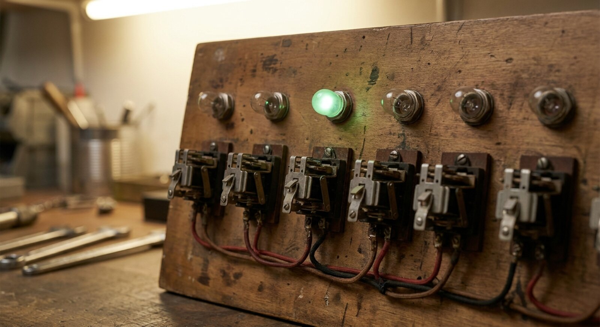

GitHub Actions workflows for zzcollab research compendia

Two workflow files, three workspace types: knowing which CI to apply is the first step toward a reproducible research pipeline.
Introduction
I did not realize that my zzcollab repos had inconsistent CI until I tried to distribute a single working workflow file across 45 projects and watched the results diverge in unexpected ways. Some repos needed R CMD check. Some needed Rmd rendering. Some needed both. A few needed neither. There was no single file that was right for all of them.
The problem was not the YAML itself; it was that I had treated all zzc workspaces as equivalent. A manuscript-package compendium (an R package plus a companion Rmd report) has genuinely different CI needs from a data-analysis compendium (scripts and data, no package) or a blog-post compendium (Quarto source, no R package at all). Applying the wrong workflow to the wrong workspace type either misses real errors or runs unnecessary steps on every push.
This post maps the three workspace types to their correct workflow combinations, annotates each YAML file in detail, and documents the key configuration decisions that determine whether CI passes or fails.
Motivations
- Distributing a single workflow file across all repos exposed the fact that ‘one size fits all’ CI does not work when workspace structure varies.
- A repo running R CMD check against packages that are not declared in DESCRIPTION will fail with a cryptic ‘packages not available’ error that takes time to diagnose.
- The
RENV_CONFIG_REPOS_OVERRIDEvariable is not in the zzcollab template by default, yet without it renv may restore from a binary repo pinned to the wrong Ubuntu release. - Version-controlling CI alongside the compendium means every collaborator gets the same check, not just the person who happens to have the tools installed locally.
- Surveying 45 repos revealed that five were missing the
# Profile:comment thatmake rrequires, and seven were using the wrong base workflow for their workspace type.
Objectives
- Understand the three zzc workspace types and which CI workflows each requires.
- Deploy
r-package.ymlcorrectly, including theRENV_CONFIG_REPOS_OVERRIDEfix, in any manuscript-package or data-analysis compendium. - Deploy
render-report.ymlcorrectly in any workspace that containsanalysis/**/report.Rmdfiles. - Verify that CI passes on GitHub Actions after deploying the correct workflow combination.

What is a zzcollab workflow?
A zzcollab workflow is a GitHub Actions YAML file that validates R package structure, renders manuscripts, or both, triggered automatically on every push to main. The two workflow files serve distinct purposes and use different execution environments by design.
r-package.yml runs on a bare GitHub-hosted Ubuntu runner and reads dependencies from DESCRIPTION. It answers the question: is this a well-formed R package with all declared dependencies resolvable? It does not test the Docker environment and does not use renv.lock.
render-report.yml builds the project’s own Docker image and runs renv::restore() inside it before rendering manuscripts. It answers the question: does the fully pinned, containerized environment produce a rendered output? It is the CI equivalent of make r followed by rmarkdown::render().
Keeping the two concerns separate means a package structural error (missing documentation, undeclared import) is caught by one workflow, and an environment reproducibility error (broken lockfile, Docker build failure) is caught by the other.
Prerequisites
This post assumes:
- zzcollab version: v2.4.0 or later (the
.zzcollab/manifest.jsonmarker is present). - GitHub: the repo is hosted on GitHub with Actions enabled.
- Workspace type: the repo’s workspace type (manuscript-package, data-analysis, or blog-post compendium) is known (see the decision table below).
- renv: an
renv.lockfile is present and up to date. - Dockerfile: the repo has a
Dockerfilewith a# Profile:comment in the first 20 lines.
If the Dockerfile is missing the # Profile: comment, make r will abort with ‘Could not detect profile from Dockerfile’. Add the comment before proceeding.
The Three Workspace Types
zzcollab repos fall into three structural categories. The correct CI combination follows from the category.
| Workspace type | Has R package | Has analysis/**/report.Rmd |
r-package.yml |
render-report.yml |
|---|---|---|---|---|
| Manuscript-package | yes | yes | yes | yes |
| Data-analysis | yes | no | yes | no |
| Blog-post | no | no (Quarto source) | no | no |
Manuscript-package (most common): an R package that implements the analysis, plus one or more analysis/*/report.Rmd manuscripts. Needs both workflows: r-package.yml checks the package, render-report.yml renders the manuscripts.
Data-analysis: an R package used for a self-contained analysis but without companion manuscripts. Needs r-package.yml only.
Blog-post (qblog compendia): a Quarto document with supporting R code but no R package structure. Neither workflow applies; Quarto rendering is handled by a separate quarto-publish.yml if needed.
The zzcollab doctor (zzc doctor) reports r-package.yml as a required file for manuscript-package and data-analysis repos. It does not currently scaffold render-report.yml automatically.
The R CMD Check Workflow: r-package.yml
Place this file at .github/workflows/r-package.yml. It is the standard zzcollab CI workflow for any repo that contains an R package.
The key architectural decision in v2.7.0 is that this workflow runs on a bare GitHub-hosted Ubuntu runner, not inside the project’s Docker container. Its sole purpose is to validate R package structure: can the package be installed, do declared dependencies resolve, and do the tests pass? Exact version pinning and container reproducibility are render-report.yml’s responsibility, not this workflow’s.
# zzcollab r-package.yml v2.7.0
#
# Validates R package structure via R CMD check on a host runner.
# Dependencies installed from DESCRIPTION (not renv.lock); exact version
# pinning and container reproducibility are covered by render-report.yml.
#
name: R Package Check
on:
push:
branches: [ main, master ]
pull_request:
branches: [ main, master ]
# No paths: filter here — every push triggers a package check because
# any source change can break R CMD check. Path filtering is reserved
# for render-report.yml, whose Docker build is expensive.
jobs:
check:
runs-on: ubuntu-latest
# WHY host runner, not the project container: the zzcollab .Rprofile
# suppresses renv when ZZCOLLAB_CONTAINER=true is absent. Running on a
# bare host runner and reading from DESCRIPTION sidesteps this entirely.
env:
GITHUB_PAT: ${{ secrets.GITHUB_TOKEN }}
# GITHUB_TOKEN is auto-provided by Actions; exposing it as GITHUB_PAT
# allows r-lib actions to authenticate against GitHub Package Registry
# when resolving dependencies declared in DESCRIPTION.
R_KEEP_PKG_SOURCE: yes
# Retains source packages after installation so R CMD check can
# inspect them; without this, check artefacts may be incomplete.
steps:
- uses: actions/checkout@v6
- name: Install system dependencies
run: |
sudo apt-get update -q
sudo apt-get install -y --no-install-recommends \
libcurl4-openssl-dev libssl-dev libxml2-dev \
libblas-dev liblapack-dev libnlopt-dev \
libfontconfig1-dev libfreetype6-dev \
libharfbuzz-dev libfribidi-dev \
libgit2-dev cmake
# These are the C/C++ system libraries that R packages link against
# at compile time. They are not in DESCRIPTION; they must be
# installed manually before setup-r-dependencies runs.
- uses: r-lib/actions/setup-pandoc@v2
# Required for vignettes and Rmd-based documentation that calls
# pandoc during R CMD check.
- uses: r-lib/actions/setup-r@v2
with:
use-public-rspm: true
# Points R at Posit Package Manager, which serves pre-compiled
# Linux binaries. Without this, every package compiles from
# source, adding 10-30 minutes to the run.
- uses: r-lib/actions/setup-r-dependencies@v2
# WHY not setup-renv: this action reads DESCRIPTION, not renv.lock.
# Using setup-renv would call renv::restore(), which the zzcollab
# .Rprofile silently skips on a host runner (no ZZCOLLAB_CONTAINER).
with:
extra-packages: any::rcmdcheck
# rcmdcheck is a CI tool, not a project dependency; it is absent
# from DESCRIPTION and must be declared here explicitly.
needs: check
# Tells the action this is a check workflow; it installs Suggests
# packages in addition to Imports, matching what R CMD check tests.
- uses: r-lib/actions/check-r-package@v2
# Wraps rcmdcheck::rcmdcheck() with sensible CI defaults. Fails on
# any ERROR or WARNING (including undocumented exported objects).
with:
upload-snapshots: true
# Uploads testthat snapshots as artefacts so failures can be
# inspected without re-running locally.Why a host runner, not the project container?
Earlier zzcollab CI templates (v2.4.0) ran R CMD check inside the project’s rocker/tidyverse container. This felt natural, since make r uses the same container for local development. The approach worked until the zzcollab .Rprofile was updated to suppress renv activation outside the Docker environment. .Rprofile gates the entire renv workflow on the environment variable ZZCOLLAB_CONTAINER=true, which is only set inside the Docker container. On a bare host runner the variable is absent, so .Rprofile prints ‘Host R session (renv skipped – use container for reproducibility)’ and exits the renv block entirely. Any workflow step that subsequently calls renv::restore() finds no active project library and fails with a cascade of ‘dependency failed’ errors covering every package in the lockfile.
The host-runner approach sidesteps this entirely: r-lib/actions/setup-r-dependencies@v2 reads declared dependencies from DESCRIPTION and installs the latest compatible versions from Posit Package Manager, without invoking renv at all. This is semantically correct because R CMD check is agnostic to renv; it only requires that DESCRIPTION-declared packages are present on .libPaths().
The tradeoff is that the workflow tests against the latest compatible package versions, not the pinned versions in renv.lock. For a package validity check this is the right behavior. A package whose R CMD check passes only against a specific pinned version has undeclared version constraints that belong in DESCRIPTION.
Key decisions in r-package.yml
setup-r-dependencies@v2 not setup-renv@v2: The correct action for a DESCRIPTION-driven install is r-lib/actions/setup-r-dependencies. Using r-lib/actions/setup-renv calls renv::restore(), which fails on zzcollab repos because .Rprofile suppresses renv outside the container. Note also that the action name r-lib/actions/install-r-package-deps does not exist; the correct name is setup-r-dependencies.
extra-packages: any::rcmdcheck with needs: check: rcmdcheck is a CI tool, not a project dependency. It does not appear in DESCRIPTION and must be declared explicitly so setup-r-dependencies installs it alongside the project packages. The needs: check tag is the standard convention signaling that this is a check workflow.
r-lib/actions/check-r-package@v2: This action wraps rcmdcheck::rcmdcheck() with sensible defaults and uploads check artifacts. It fails the workflow on any ERROR and treats WARNINGs as errors by default. Undocumented exported objects produce a WARNING and will therefore fail CI; all exported functions must have roxygen2 documentation entries.
use-public-rspm: true: Tells setup-r to configure Posit Package Manager as the package repository, providing pre-compiled Linux binaries and avoiding source compilation for most packages.
No renv, no container pin: The workflow installs the latest compatible versions of declared dependencies. This is intentional. If a package requires a specific minimum version, express that constraint in DESCRIPTION with a (>= x.y.z) qualifier.
The Report-Rendering Workflow: render-report.yml
Place this file at .github/workflows/render-report.yml. It applies only to manuscript-package repos that contain analysis/**/report.Rmd files.
name: Render Reports
on:
push:
branches: [main, master]
paths:
# WHY path filters: building the Docker image takes 5-15 minutes.
# Triggering only when analysis code, R source, the lockfile, or the
# Dockerfile changes avoids that cost on documentation-only pushes.
- 'analysis/**'
- 'R/**'
- 'renv.lock'
- 'Dockerfile'
- '.github/workflows/render-report.yml'
pull_request:
branches: [main, master]
paths:
- 'analysis/**'
- 'R/**'
- 'renv.lock'
- 'Dockerfile'
jobs:
render:
runs-on: ubuntu-latest
# The job runs on a bare host runner, but all R work happens inside
# the project's own Docker container (see 'docker run' step below).
steps:
- uses: actions/checkout@v6
# Makes the repo contents available at $GITHUB_WORKSPACE, which is
# then bind-mounted into the container.
- uses: docker/setup-buildx-action@v3
# Initialises BuildKit, the modern Docker build backend. Required
# for --mount=type=cache in the Dockerfile (layer caching syntax).
- name: Build Docker image
run: |
docker build -t compendium-env .
# Builds the project's own Dockerfile, not a generic rocker image.
# This means the render runs against the exact pinned environment
# defined in this repo, including all tlmgr-installed LaTeX packages.
- name: Restore packages and render all manuscripts
run: |
docker run --rm \
# --rm: remove the container after it exits (no orphan containers)
-e CI=true \
# CI=true: signals to R packages (e.g. usethis, renv) that this
# is a non-interactive CI run; suppresses prompts and progress bars.
-v ${{ github.workspace }}:/project \
# Bind-mounts the checked-out repo into the container at /project,
# so the container can read source files and write rendered output
# back to the runner's workspace for the upload step.
-w /project compendium-env \
# Sets the container working directory to /project (the repo root).
Rscript -e '
renv::restore()
# Synchronises the container library with renv.lock. The
# Dockerfile already ran renv::restore() at build time, so this
# is typically a no-op -- but it catches any drift introduced by
# bind-mounting the host repo over the container filesystem.
rmds <- list.files(
"analysis", pattern = "^report[.]Rmd$",
recursive = TRUE, full.names = TRUE
)
cat("Found", length(rmds), "manuscripts\n\n")
failed <- character()
for (rmd in rmds) {
cat("=== Rendering:", rmd, "===\n")
old_wd <- setwd(dirname(rmd))
tryCatch(
rmarkdown::render(basename(rmd)),
error = function(e) {
cat("FAILED:", conditionMessage(e), "\n")
failed <<- c(failed, rmd)
# Collect failures rather than stopping at the first one,
# so all manuscripts are attempted and all errors reported.
}
)
setwd(old_wd)
}
cat("\n=== summary ===\n")
cat("rendered:", length(rmds) - length(failed), "\n")
cat("failed: ", length(failed), "\n")
if (length(failed) > 0) {
for (f in failed) cat(" ", f, "\n")
quit(status = 1)
# Exit non-zero so the GitHub Actions step is marked failed.
}
'
- name: Upload rendered PDFs
if: always()
# WHY always(): uploads artefacts even when the render step failed,
# so partially-rendered PDFs are available for debugging.
uses: actions/upload-artifact@v4
with:
name: rendered-manuscripts
path: |
analysis/**/*.pdf
retention-days: 30
if-no-files-found: warn
# warn rather than error: a repo with no report.Rmd files yet is
# not a failure; the step completes with a warning instead.Key decisions in render-report.yml
Path filters: The workflow triggers only when files under analysis/, R/, renv.lock, or the Dockerfile change. This avoids running a full Docker build on every push that touches only documentation or CI configuration.
Docker build inside CI: The workflow builds the project’s own Docker image rather than using rocker/verse directly. This means the rendered output reflects the exact environment defined in the repo’s Dockerfile, including any custom system dependencies.
if-no-files-found: warn: If the repo contains no report.Rmd files, the upload step warns rather than fails. This makes the workflow safe to include in repos where manuscripts are work-in-progress.
No r-package.yml duplication: render-report.yml does not run R CMD check. It is the companion to r-package.yml, not a replacement; a manuscript-package repo requires both.
Verification
After placing the correct workflow files, push a commit to main and confirm CI passes:
gh run list --repo <owner>/<repo> --limit 3
gh run view <run-id> --log-failedA successful r-package.yml run ends with:
Status: 0 ERRORs, 0 WARNINGs, N NOTEsA successful render-report.yml run uploads one PDF per report.Rmd found in the analysis/ tree.
Diagnosing common failures
‘Packages required but not available’: RENV_CONFIG_REPOS_OVERRIDE is missing or wrong. Check that the URL ends in noble/latest (not jammy/latest) for Ubuntu 24.04 containers.
‘Could not detect profile from Dockerfile’: The Dockerfile is missing # Profile: <name> in the first 20 lines. Add it before running make r or pushing to CI.
‘no package called here’ in tinytest: A test file calls library(here) but here is not declared in DESCRIPTION. Add here to Suggests.
‘Namespaces in Imports field not imported from’: A package is listed in DESCRIPTION Imports but never used. Remove it or demote it to Suggests.
Daily Workflow
With both workflow files in place, the typical development loop is:
| Action | CI triggered |
|---|---|
git push to main |
both workflows if paths match |
Edit analysis/ only |
render-report.yml only |
Edit R/ only |
both workflows |
Edit .github/ only |
neither (path filters exclude it) |
Running zzc doctor before pushing catches most structural issues (missing # Profile:, outdated .Rprofile, misplaced files) before they become CI failures.
Things to Watch Out For
The zzcollab
.Rprofilesuppresses renv on any host runner..Rprofilegates renv activation onZZCOLLAB_CONTAINER=true. This variable is only set inside the Docker container. Any CI workflow that runs on a bare Ubuntu runner and callsrenv::restore()(includingr-lib/actions/setup-renv@v2) will silently skip renv activation and then fail with ‘dependency failed’ errors for every package in the lockfile. The fix is to usesetup-r-dependencies@v2inr-package.yml(which reads fromDESCRIPTION, notrenv.lock) and to reserve renv-based workflows forrender-report.yml, which runs inside the container whereZZCOLLAB_CONTAINER=trueis present.renv::status()$synchronizedis not a stable API field.renv::status()returns a list but the$synchronizedelement is internal to renv and has changed across versions. CI templates that checkisTRUE(status$synchronized)to gate a quit will misfire. renv may report drift for reasons unrelated to the lockfile. For example, renv itself may be downgraded from 1.2.3 to 1.2.2 during restore, which is lockfile-consistent but still triggers a status change. The symptom is a ‘renv lockfile is not synchronized’ failure immediately after a successfulrenv::restore(). Remove this check fromrender-report.ymlentirely;renv::restore()already exits non-zero on genuine failures.r-lib/actions/install-r-package-depsdoes not exist. The correct action name isr-lib/actions/setup-r-dependencies. Using the wrong name produces ‘Can’t find action.yml’ and a silent job failure with no informative error message.Both workflows trigger on the same push if both are present. In a manuscript-package repo this is correct. In a data-analysis repo with no manuscripts,
render-report.ymlwill still run but will find zeroreport.Rmdfiles and exit with a warning, not an error.Undeclared exported objects fail CI.
check-r-package@v2treats WARNINGs as errors. Every object exported via@exportin roxygen2 must have a documentation entry. Constants and datasets exported viaNAMESPACEalso require documentation. The check message is ‘Undocumented code objects’; the fix is to add a minimal roxygen2 block to each object.Undeclared test dependencies also fail CI. If a test file calls
library(foo)orfoo::bar()andfoois not listed inDESCRIPTIONunderImportsorSuggests, R CMD check fails even iffoois inrenv.lock.renv.lockis invisible toR CMD check.render-report.ymlbuilds the Docker image on every triggered run. Without a Docker layer cache, this adds 3-10 minutes per run. The workflow does not currently usecache-fromorcache-tofor the Docker build step.TinyTeX auto-install does not work in CI.
rocker/verseships a system-level TeX Live installation, not TinyTeX. TinyTeX’s auto-install mechanism requires the wrapper scripts placed bytinytex::install_tinytex();rocker/verseprovides plain TeX Live executables instead, so no wrappers are present. Whenxelatexencounters a missing package such asamssymb.styorbooktabs.sty, it fails immediately with ‘File not found’. Pre-install every required LaTeX package viatinytex::tlmgr_install()in the Dockerfile; the image must be self-contained.Packages installed by the Dockerfile outside
renv.lockare invisible afterrenv::restore(). Packages written to the site library byinstall.packages()during the Docker build are not recorded inrenv.lock. Whenrender-report.ymlcallsrenv::restore(), renv activates a project library that shadows the site library, making those packages invisible. The symptom is ‘there is no package called X’ immediately after a successful restore. The fix is to runrenv::snapshot()inside the container after anyinstall.packages()call that adds a render-time dependency.
Uninstall / Rollback
To remove CI from a repo:
rm .github/workflows/r-package.yml
rm .github/workflows/render-report.yml
git add -u .github/workflows/
git commit -m "Remove CI workflows"
git pushGitHub Actions stops triggering automatically once the YAML files are removed. Any in-progress runs will complete before the removal takes effect.
What Did We Learn?
Lessons Learned
Conceptual understanding:
- Workspace type (manuscript-package, data-analysis, blog-post) determines the correct CI combination. Applying the same workflow to all repos masks real differences in what each repo needs to verify.
r-package.ymlandrender-report.ymlanswer different questions and must use different execution environments.r-package.ymlruns on a bare host runner and reads fromDESCRIPTION;render-report.ymlruns inside the project container and reads fromrenv.lock. Conflating the two produces failures that are difficult to diagnose.- The zzcollab
.Rprofileis a first-class architectural constraint, not an implementation detail. Any CI workflow that touches renv on a host runner will fail silently because.Rprofilegates renv onZZCOLLAB_CONTAINER=true. Understanding this gate is prerequisite to writing any new zzcollab CI template. - Internal renv API fields (such as
renv::status()$synchronized) are not stable across renv versions and should not be used as CI gates. Userenv::restore()exit codes instead.
Technical skills:
gh run list --json workflowName,conclusion,createdAt --jqproduces a concise pass/fail table across multiple repos without opening the browser.gh run view --log-failedisolates the failing step and its error message without scrolling through the full log.- Comparing workflow file line counts across commits (
git show SHA:path | wc -l) quickly confirms whether a file changed between two runs. diff <(git show SHA1:file) <(git show SHA2:file)is more reliable thangit diff SHA1..SHA2 -- filewhen working from a Dropbox-synced path, where the path-filtered diff may return empty output unexpectedly.zzc validate --fixscans R source files and adds missing packages toDESCRIPTIONand stub entries torenv.lock. The stub entries lackHashandRequirementsfields; a fullrenv::snapshot()inside the container is still required to produce a complete lockfile.
Gotchas and pitfalls:
- A cascade of ‘dependency failed’ errors in
setup-renv@v2on a host runner is almost always caused by.Rprofilesuppressing renv, not by missing packages. Check for the message ‘Host R session (renv skipped)’ in the step log before investigating individual packages. actions/checkout@v6exists and is current as of May 2026. Checking the GitHub Marketplace release history before assuming a version is wrong prevents unnecessary edits.r-lib/actions/install-r-package-depsis not a real action. The correct name isr-lib/actions/setup-r-dependencies. The error message (‘Can’t find action.yml’) is not informative about the cause.- Adding
render-report.ymlto a data-analysis repo is harmless but wasteful. Theif-no-files-found: warnoption prevents a hard failure, but the Docker build step still runs on every triggered push. - ‘there is no package called X’ immediately after a successful
renv::restore()means X was installed by the Dockerfile outsiderenv.lockand is being shadowed by the renv project library. Runrenv::snapshot()inside the container to record it. - Missing LaTeX packages (
amssymb.sty,booktabs.sty, etc.) in CI always indicate a gap in the Dockerfile’stlmgr_install()list. TinyTeX auto-install is absent inrocker/verse; do not wait for it.
Limitations
- These two workflow files cover only the most common zzc CI patterns. Repos with Shiny applications, pkgdown sites, or Quarto books require additional or different workflow files not documented here.
r-package.ymltests against the latest compatible package versions, not the pinned versions inrenv.lock. A regression introduced by a new upstream package release will appear inr-package.ymlCI but not in local development (which uses pinned versions). This is a feature, not a defect, but it requires prompt attention when CI fails on a push that made no package-related changes.render-report.ymldoes not cache the Docker build. Large images with many compiled system libraries can take 10 or more minutes to build from scratch on every triggered run.- The zzcollab
.Rprofiledesign (renv gated onZZCOLLAB_CONTAINER=true) means any future CI workflow that needs renv on a host runner must either run inside the container or set the variable explicitly, which is semantically misleading. A cleaner long-term fix would gate renv onCI=true || ZZCOLLAB_CONTAINER=true, but this requires a coordinated change to the zzcollab.Rprofiletemplate. - The workflows target the
mainandmasterbranches only. Feature branches do not get CI unless theon: push: brancheslist is extended. - Neither workflow addresses code coverage, linting, or spell-checking. These require additional workflow steps or separate YAML files.
Opportunities for Improvement
- Add Docker layer caching to
render-report.ymlusingcache-from: type=ghaandcache-to: type=gha,mode=maxin the build step to reduce build times from 10 minutes to under 2 minutes on cache hits. - Extend
zzc doctorto scaffoldrender-report.ymlautomatically for manuscript-package repos, so the file is present from firstzzc initrather than requiring manual distribution. - Add a
--no-vignettesflag to thercmdcheck::rcmdcheck()call for repos with vignettes that require LaTeX, which is not available on the bare host runner used byr-package.yml. - Parameterize the R version and Ubuntu codename in both workflow files so that bumping the container image requires a change in one place rather than two.
- Add a workflow dispatch trigger (
on: workflow_dispatch) to both files so CI can be triggered manually from the GitHub Actions tab without a push. - Build a
zzc ci-statussubcommand that queriesgh run listfor all repos in a directory tree and reports pass/fail in a single table.
Wrapping Up
Getting CI right in a zzcollab portfolio is a two-step problem: first, identify the workspace type; second, apply the correct workflow combination. The manuscript-package type is the most common and the most demanding, requiring both r-package.yml and render-report.yml. The data-analysis type needs only the package check. The blog-post type needs neither.
The most important architectural insight from developing these workflows is that the two files must use different execution environments because they answer different questions. r-package.yml asks whether the package is structurally sound, reads from DESCRIPTION, and runs on a bare host runner. render-report.yml asks whether the fully pinned containerized environment produces a rendered output, reads from renv.lock, and runs inside the project’s own Docker image. Conflating the two – for example, by running renv::restore() on a host runner – triggers the zzcollab .Rprofile gate and produces a cascade of ‘dependency failed’ errors that obscure the real cause.
The practical corollary is that r-package.yml must use r-lib/actions/setup-r-dependencies@v2 (reading from DESCRIPTION), not any renv-based action, precisely because the zzcollab .Rprofile gate makes renv silent on host runners. Equally, render-report.yml should not gate on renv::status()$synchronized: that field is an internal renv API that misfires after a version downgrade, and renv::restore() exit codes are the correct signal. For diagnostics, zzc doctor before a push and gh run view --log-failed after one cover most failure modes without opening the browser.
See Also
Related posts:
- A tiered CI strategy for zzcollab research compendia: companion post on the broader CI philosophy behind these workflow files.
Key resources:
- GitHub Actions documentation: reference for workflow syntax, triggers, and runner environments.
- Posit Package Manager: source of pre-compiled R package binaries for Linux distributions.
- rocker-org/rocker-versioned2: source for the
rocker/tidyverseandrocker/versecontainer images used in CI. - renv documentation: reference for
renv.lock,RENV_CONFIG_REPOS_OVERRIDE, and related configuration options.
Glossary
The following terms appear throughout this post. Readers familiar with GitHub Actions can skip this section.
Workflow: a YAML file placed under .github/workflows/ that defines one or more automated jobs. GitHub executes the workflow whenever a configured trigger event occurs.
Trigger (on:): the event that causes a workflow to run. Common triggers are push (a commit pushed to a branch), pull_request (a PR opened or updated against a branch), and workflow_dispatch (a manual run initiated from the GitHub Actions tab).
paths: filter: narrows a push or pull_request trigger to fire only when at least one changed file matches the listed glob patterns. Used in render-report.yml to avoid a full Docker build on documentation-only pushes.
branches: filter: further narrows a trigger to specific branch names. Both workflows target main and master only; pushes to feature branches do not trigger CI unless this list is extended.
Job: a named set of steps that execute sequentially on the same runner. Each workflow in this post defines one job (check and render, respectively).
Runner: the virtual machine that executes a job. runs-on: ubuntu-latest requests a GitHub-hosted Ubuntu 24.04 runner. Runners are ephemeral: they are provisioned fresh for each job run and discarded afterwards.
Step: one unit of work within a job. A step is either a run: block (arbitrary shell commands) or a uses: block (a pre-built action). Steps within a job share the same runner filesystem and environment variables.
Action (uses:): a reusable automation unit published to the GitHub Marketplace or a repository. Referenced as owner/repo@version, for example actions/checkout@v6. The version tag pins the action to a specific major release; updates within that major version are pulled automatically.
with:: named input parameters passed to an action. The available inputs are defined by the action’s own action.yml; passing an unrecognized key is silently ignored.
env:: key-value pairs that are injected as environment variables for the scope in which they are declared (workflow, job, or individual step). Variables declared at job level are visible to all steps in that job.
Secret (secrets.*): an encrypted value stored in the repository’s Settings > Secrets. Accessed in a workflow via the expression syntax ${{ secrets.NAME }}. GITHUB_TOKEN is auto-provisioned by GitHub Actions for every run and requires no manual setup.
Expression (${{ ... }}): GitHub Actions’ interpolation syntax, evaluated at workflow parse time. Common uses include accessing secrets (${{ secrets.GITHUB_TOKEN }}), context variables (${{ github.workspace }}), and conditional expressions in if: fields.
Artifact: a file or directory uploaded from a workflow run via actions/upload-artifact. Artifacts are retained for the number of days specified by retention-days and can be downloaded from the run summary page. Used in render-report.yml to preserve rendered PDFs.
if: always(): a step-level condition that evaluates to true regardless of whether previous steps succeeded or failed. Used on the upload step so that partially-rendered PDFs are available for debugging even when a render fails.
r-lib/actions: a collection of GitHub Actions maintained by the r-lib organization specifically for R workflows. The three used in this post are setup-r (installs R), setup-r-dependencies (installs packages from DESCRIPTION), and check-r-package (runs R CMD check via rcmdcheck).
workflow_dispatch: an on-demand trigger that enables a workflow to be run manually from the GitHub Actions tab without pushing a commit. Not currently configured in these workflows; see Opportunities for Improvement.
Reproducibility
Tested configuration:
| Component | Version |
|---|---|
| Operating system (host) | macOS 15.4 |
| Operating system (CI) | Ubuntu 24.04.4 LTS (noble) |
| R (host runner) | latest release (setup-r) |
| rocker/verse (render-report) | 4.6.0 |
| actions/checkout | v6 |
| r-lib/actions/setup-r | v2 |
| r-lib/actions/setup-r-dependencies | v2 |
| r-lib/actions/check-r-package | v2 |
| actions/upload-artifact | v4 |
| docker/setup-buildx-action | v3 |
| Last verified | 2026-05-22 |
Workflow files (genericized):
docs/r-package.yml: annotated generic R CMD check workflowdocs/render-report.yml: annotated generic report-rendering workflow
Rendered on 2026-05-22 at 18:16 PDT.
Source: ~/prj/rgtlab/posts/zc-github-actions-workflows/index.qmd
Let’s Connect
Have questions, suggestions, or spot an error? Let me know.
- GitHub: rgt47
- LinkedIn: Ronald Glenn Thomas
- Email: rgthomas47@gmail.com